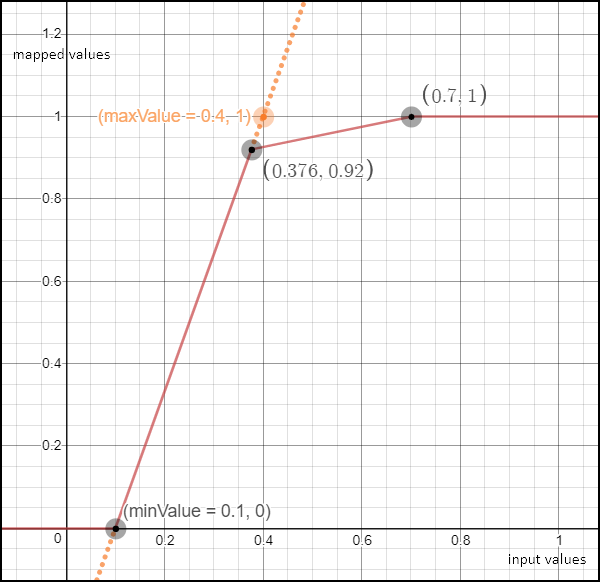

Utility Functions
Visualizers
Visualizers are JavaScript classes with a method process which evaluates the representation value for a pixel from pixel’s band values.
ColorMapVisualizer
Sets the color from a discrete color map.
Parameters
Examples
const map = [
[200, 0xff0000],
[300, 0x0000ff ],
];
const visualizer = new ColorMapVisualizer(map);
visualizer.process(199); // returns [ 1, 0, 0 ]
visualizer.process(200); // returns [ 1, 0, 0 ]
visualizer.process(250); // returns [ 1, 0, 0 ]
visualizer.process(299); // returns [ 1, 0, 0 ]
visualizer.process(300); // returns [ 0, 0, 1 ]process
Returns interpolated color for value.
Parameters
valnumber
createDefaultColorMap
Creates ColorMapVisualizer with following valColPairs
[
[-1.0, 0x000000],
[-0.2, 0xff0000],
[-0.1, 0x9a0000],
[0.0, 0x660000],
[0.1, 0xffff33],
[0.2, 0xcccc33],
[0.3, 0x666600],
[0.4, 0x33ffff],
[0.5, 0x33cccc],
[0.6, 0x006666],
[0.7, 0x33ff33],
[0.8, 0x33cc33],
[0.9, 0x006600]
]ColorGradientVisualizer
Interpolates a color based on interval.
Parameters
process
Returns interpolated color for value.
Parameters
valnumber
createRedTemperature
Creates ColorGradientVisualizer with valColPairs redTemperature
Parameters
Examples
const visualizer = ColorGradientVisualizer.createRedTemperature(0.0, 1.0);
visualizer.process(0.0); // returns [ 0, 0, 0 ]
visualizer.process(0.3); // returns [ 0.43137254901960786, 0, 0 ]
visualizer.process(0.5); // returns [ 0.7176470588235294, 0.047058823529411764, 0 ]
visualizer.process(0.8); // returns [ 1, 0.6196078431372549, 0.2 ]
visualizer.process(1.0); // returns [ 1, 1, 1 ]Returns ColorGradientVisualizer
createWhiteGreen
Creates ColorGradientVisualizer with valColPairs greenWhite
Parameters
Examples
const visualizer = ColorGradientVisualizer.createWhiteGreen(0.0, 1.0);
visualizer.process(0.0); // returns [ 0, 0, 0 ]
visualizer.process(0.3); // returns [ 0, 0.2980392156862745, 0 ]
visualizer.process(0.5); // returns [ 0.16862745098039217, 0.5019607843137255, 0 ]
visualizer.process(0.8); // returns [ 0.6666666666666666, 0.8, 0.3333333333333333 ]
visualizer.process(1.0); // returns [ 1, 1, 1 ]Returns ColorGradientVisualizer
createBlueRed
Creates ColorGradientVisualizer with valColPairs blueRed
Parameters
Examples
const visualizer = ColorGradientVisualizer.createBlueRed(0.0, 1.0);
visualizer.process(0.0); // returns [ 0, 0, 0.5019607843137255 ]
visualizer.process(0.3); // returns [ 0, 0.7019607843137254, 1 ]
visualizer.process(0.5); // returns [ 0.5019607843137255, 1, 0.5019607843137255 ]
visualizer.process(0.8); // returns [ 1, 0.2980392156862745, 0 ]
visualizer.process(1.0); // returns [ 0.5019607843137255, 0, 0 ]Returns ColorGradientVisualizer
ColorRampVisualizer
Interpolates a color based on the given color ramps.
Parameters
Examples
const ramps = [
[200, 0xff0000],
[300, 0x0000ff ],
];
const visualizer = new ColorRampVisualizer(ramps);
visualizer.process(199); // [ 1, 0, 0 ]
visualizer.process(200); // [ 1, 0, 0 ]
visualizer.process(250); // [ 0.5019607843137255, 0, 0.5019607843137255 ]
visualizer.process(299); // [ 0.011764705882352941, 0, 0.9882352941176471 ]
visualizer.process(300); // [ 0, 1, 0 ]process
Returns interpolated color for value.
Parameters
valuenumber
HighlightCompressVisualizer
This is a piecewise linear function which compresses highlights. The minValue and maxValue will be mapped inside the interval [ 0, 1 ]. However, if maxValue lies in (0, 1) a second function which increases much more slowly will be used to further map the values which are mapped to 0.92 and above (see the figure below). This increases the visualized dynamic range while keeping most of the interval of interest linear. Useful, for example, for true color, with a maxValue of 0.4 to still keep some detail in clouds.

Parameters
minValuenumber the value which will be mapped to 0. All values smaller than minValue will also be mapped to 0. (optional, default0.0)maxValuenumber the value which controls the position of the boundary point between both linear functions. It will be mapped to approx. 0.9259, while values greater than or equal to (2*maxValue - minValue) will be mapped to 1 (see the figure above). (optional, default1.0)gain(optional, default1.0)offset(optional, default0.0)gamma(optional, default1.0)
Examples
const visualizer = new HighlightCompressVisualizer(0.1, 0.4)
visualizer.process(0); // will return 0
visualizer.process(0.1); // will return 0
visualizer.process(0.25); // will return 0.5
visualizer.process(0.376); // will return 0.92. Note: 0.376 = minValue + 0.92*(maxValue - minValue)
visualizer.process(0.4); // will return 0.9259
visualizer.process(0.7); // will return 1 Note: 0.7 is the smallest value mapped to 1.
visualizer.process(1.1); // will return 1process
Returns mapped value.
Parameters
Returns [number] mapped value.
Helper functions
Helper functions that can be used in custom scripts.
int2rgb
Transforms a color as integer into RGB triplet.
Parameters
colornumber as integer
Examples
int2rgb(255); // returns [ 0, 0, 255 ]
int2rgb(256); // returns [ 0, 1, 0 ]
int2rgb(65537); // returns [ 1, 0, 1 ]rgb2int
Inverse of the int2rgb function. Transforms a RGB triplet into integer.
Parameters
Examples
rgb2int([0, 0, 255]); // returns 255
rgb2int([0, 1, 0]); // returns 256
rgb2int([1, 0, 1]); // returns 65537Returns number
combine
Combines two colors.
Parameters
Examples
combine([100, 0, 0], [0, 100, 0], 1); // returns [ 100, 0, 0 ]
combine([100, 0, 0], [0, 100, 0], 0); // returns [ 0, 100, 0 ]
combine([100, 0, 0], [0, 100, 0], 0.5); // returns [ 50, 50, 0 ]Returns number The combined color defined as an array of values.
index
Calculate difference divided by sum
Parameters
Examples
index(0.6, 0.4); // returns 0.2
index(0.5, -0.5); //returns 0.0Returns number (x - y) / (x + y), if sum is 0 returns 0
inverse
Calculate inverse value
Parameters
xnumber value
Examples
inverse(2.0); // returns 0.5
inverse(5.0); // returns 0.2
inverse(0); // returns 1.7976931348623157E308Returns number inverse of value of x (1 / x), if x is 0 returns JAVA_DOUBLE_MAX_VAL
valueMap
Maps a value to another value bound by an interval (from,to].
intervals = [-10, -5, 0, 5, 10], values = [-100,-50, 0, 50, 100]
defines the following mapping:
(-inf, -10] => -100
(-10, -5] => -50
(-5,0] => 0
(0, 5] => 50
(5, +inf) => 100Parameters
Examples
valueMap(5, [1, 3, 5, 7, 10], [100, 300, 500, 700, 900]); // returns 500
valueMap(1, [1, 3, 5, 7, 10], [100, 300, 500, 700, 900]); // returns 100
valueMap(2, [1, 3, 5, 7, 10], [100, 300, 500, 700, 900]); // returns 300
valueMap(12, [1, 3, 5, 7, 10], [100, 300, 500, 700, 900]); // returns 900
valueMap(50); // returns 50Returns number
valueInterpolate
Interpolates a value to another value bound by an interval (from,to]. Values at far ends of defined intervals are clamped to min/max value. This function is a replacement for the deprecated colorBlend function.
intervals = [-10, -5, 0, 5, 10], values = [-1000,-50, 0, 50, 1000]
defines the following mapping:
(-inf, -10] => -1000
(-10, -5] => (-1000, -50]
(-5,0] => (-50,0]
(0, 5] => (0,50]
(5, 10] => (50,1000]
(10, +inf) => 1000Parameters
Examples
valueInterpolate(0, [-10, -5, 0, 5, 10], [-1000,-50, 0, 50, 1000]); // returns 0
valueInterpolate(-10, [-10, -5, 0, 5, 10], [-1000,-50, 0, 50, 1000]); // returns -1000
valueInterpolate(9, [-10, -5, 0, 5, 10], [-1000,-50, 0, 50, 1000]); // returns 810
valueInterpolate(50); // returns 50
valueInterpolate(0.1, [0, 0.2, 0.4, 0.6, 0.8, 1], [
[0, 0, 0],
[0.1, 0.2, 0.5],
[0.25, 0.4, 0.5],
[0.4, 0.6, 0.5],
[0.75, 0.8, 0.5],
[1, 1, 0.5]
]); // return [0.05, 0.1, 0.25]Constants
JAVA_DOUBLE_MAX_VAL
const JAVA_DOUBLE_MAX_VAL = 1.7976931348623157E308;Type: number
blueRed
const blueRed = [
[1.000, 0x000080],
[0.875, 0x0000FF],
[0.625, 0x00FFFF],
[0.375, 0xFFFF00],
[0.125, 0xFF0000],
[0.000, 0x800000]
]redTemperature
const redTemperature = [
[1.000, 0x000000],
[0.525, 0xAE0000],
[0.300, 0xFF6E00],
[0.250, 0xFF8600],
[0.000, 0xFFFFFF]
]greenWhite
const greenWhite = [
[1.000, 0x000000],
[0.600, 0x006600],
[0.300, 0x80B300],
[0.000, 0xFFFFFF]
]colorBlend
Parameters
valuenumber input valuelimitsArray<number> array of numbers in ascending order defining intervalscolors(Array<number> | Array<Array<number>>) output interval for the given value/interval of the intervals array
Returns (number | Array<number>)
Meta
- deprecated: See valueInterpolate
Landsat8C2QaBandConditions
Cloud confidence, cloud shadow confidence, snow ice confidence and cirrus confidence represent levels of confidence that a condition exists:
- 0 = “Not Determined”
- 1 = “Low” = Low confidence.
- 2 = “Medium / Reserved” = Medium only for cloud confidence.
- 3 = “High” = High confidence.
Type: Object
Properties
fillnumber 0 for image data, 1 for fill datadilatedCloudnumber 0 for cloud is not dilated or no cloud, 1 for cloud dilationcirrusnumber 0 for no confidence level or low confidence, 1 for high confidence cirruscloudnumber 0 for cloud confidence is not high, 1 for high confidence cloudcloudShadownumber 0 for cloud shadow confidence is not high, 1 for high confidence cloud shadowsnownumber 0 for snow/ice confidence is not high, 1 for high confidence snow coverclearnumber 0 if cloud or dilated cloud, or else 1waternumber 0 for land or cloud, 1 for watercloudConfidencenumbercloudShadowConfidencenumbersnowIceConfidencenumbercirrusConfidencenumber
decodeL8C2Qa
Decodes Landsat 8 Collection 2 Quality Assessment band conditions.
Parameters
valueinteger band pixel (16-bit value)
Examples
decodeL8C2Qa(55052);
// returns {
// cirrus: 1, cirrusConfidence: 3,
// clear: 0,
// cloud: 1,
// cloudConfidence: 3,
// cloudShadow: 0,
// cloudShadowConfidence: 1,
// dilatedCloud: 0,
// fill: 0,
// snow: 0,
// snowIceConfidence: 1,
// water: 0
// }Returns Landsat8C2QaBandConditions
decodeS3OLCIQualityFlags
Unpacks bit-packed Sentinel 3 OLCI Quality Flags values.
Parameters
valueinteger QUALITY_FLAGS band DN value (32-bit value)
Returns object An object containing the following keys with either 0 or 1 values: land, coastline, fresh_inland_water, tidal_region, bright, straylight_risk, invalid, cosmetic, duplicated, sun_glint_risk, dubious, saturatedBxy (where xy is the band number, e.g. saturatedB01).